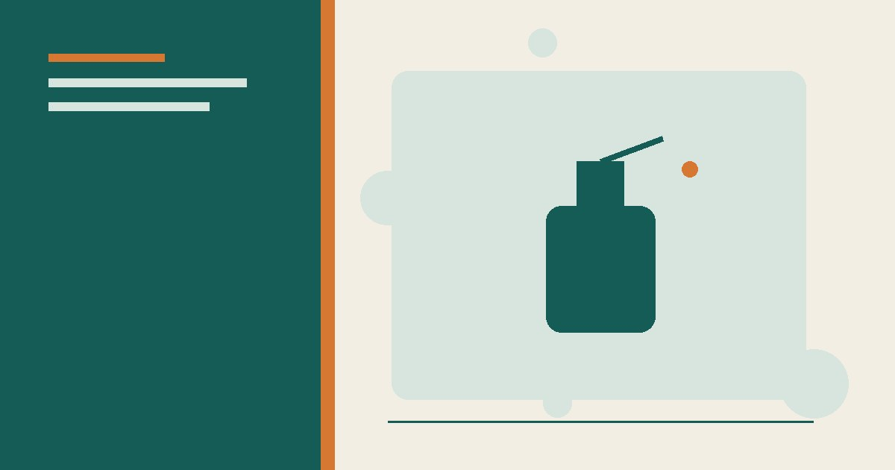

نصائح منزلية
ترتيب المنزل في 15 دقيقة يوميًا: خطة عملية
خطة عملية لترتيب المنزل في 15 دقيقة يوميًا فقط: جدول أسبوعي، قواعد ذهبية، وأدوات تساعدك على الحفاظ على بيت مرتب دائمًا.
دليل للوقاية من حشرات المنزل وتقليل مصادرها واستخدام المصائد أو المنتجات المسجلة وفق التعليمات عند الحاجة.

لا توجد وصفة منزلية واحدة تضمن طرد كل الحشرات. ابدأ بمنع الطعام والماء والمخابئ، وسد نقاط الدخول، وحدد نوع الآفة. عند الحاجة استخدم مصيدة أو منتجًا مسجلًا وفق ملصقه، واطلب مختصًا للإصابات الكبيرة أو الآفات التي يصعب تشخيصها.
نظف مسار النمل بالماء والمنظف المناسب للسطح، ثم ابحث عن نقطة الدخول وسدها. القرفة والروائح قد تغيّر المسار مؤقتًا لكنها لا تعالج مستعمرة داخل الجدار. استخدم طعمًا مسجلًا وفق التعليمات إذا استمرت المشكلة، وبعيدًا عن الأطفال والحيوانات.
ركز على الرطوبة والفتات والشقوق، واستخدم مصائد للمراقبة. لا تخلط حمض البوريك والسكر في أغطية مكشوفة؛ قد يتعرض له طفل أو حيوان. إذا استخدمت منتج حمض البوريك أو طعمًا، فليكن منتجًا مسجلًا وبالمكان والجرعة المكتوبين على الملصق.
أفرغ الماء الراكد ونظف الأوعية وثبت الشبك. المروحة قد تقلل اقتراب البعوض في مساحة محدودة، لكنها ليست حماية كاملة. للحماية الشخصية استخدم طاردًا مسجلًا ومناسبًا للعمر والحالة وفق تعليمات الجهة الصحية في بلدك. الزيوت العطرية قد تهيج الجلد أو تضر بعض الحيوانات.
غط القمامة ونظف المواد العضوية والرطوبة. استخدم مصيدة تجارية أو بسيطة في مكان لا يلوث الطعام، ولا تعتمد على أكياس الماء المعلقة؛ لا يوجد أساس موثوق يجعلها حلًا ثابتًا.
قلل الحشرات الأخرى والرطوبة والفوضى وسد الشقوق. انقل العنكبوت للخارج إذا كان ذلك آمنًا، ولا تلمس نوعًا لا تعرفه. السمك الفضي يرتبط غالبًا بالرطوبة والورق؛ خفض الرطوبة والتخزين الجاف أهم من الروائح المنزلية.
اختر منتجًا مسجلًا لنوع الآفة والمكان، واتبع الملصق بشأن التهوية والإبعاد ومدة الانتظار. لا تضاعف الجرعة ولا تنقل المنتج إلى عبوة أخرى. استعن بمختص عند بق الفراش أو النمل الأبيض أو القوارض أو تكرار الإصابة.
المكافحة الآمنة عملية: تشخيص، إزالة مصادر، منع دخول، مراقبة، ثم تدخل محدد عند الحاجة. كلمة «طبيعي» لا تضمن الفعالية أو السلامة.
رُوجعت المعلومات العامة في هذا المقال بالاستناد إلى المصادر التالية. الروابط الخارجية قد تُحدّث محتواها بمرور الوقت.
خطة عملية لترتيب المنزل في 15 دقيقة يوميًا فقط: جدول أسبوعي، قواعد ذهبية، وأدوات تساعدك على الحفاظ على بيت مرتب دائمًا.

دليل تنظيف المنزل بمواد بسيطة مع جدول للأسطح واحتياطات السلامة والمواد التي لا يجوز خلطها، والفرق بين التنظيف والتعقيم.

طرق عملية لتقليل الروائح الكريهة في المنزل: تحديد المصدر، تنظيف المطبخ والحمام، تحسين التهوية، ومتى تحتاج إلى فني.